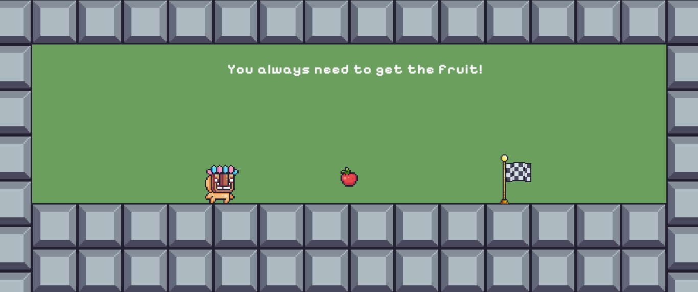

Don't Quit




'Don't Quit' é um jogo de plataforma 2D desenvolvido em Unity, inspirado em 'Level Devil'. O jogo conta com 10 níveis e diferentes desafios para os jogadores. Para cada fazer o jogador deve pegar a fruta para poder passar para o próximo nível. O jogo conta também com um contador de mortes que será mostrado durante e no final do jogo.